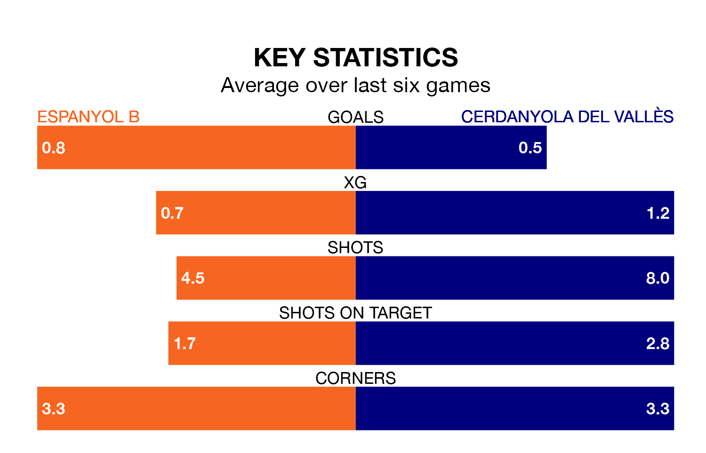

Espanyol B host Cerdanyola del Vallès on Sunday at Ciutat Esportiva Dani Jarque in the Segunda División RFEF Group 3.
In their last league match, on April 21, Espanyol B lost to Penya Independent 1-0 away.
Cerdanyola del Vallès drew, 0-0 at home against Lleida Esportiu.
Cerdanyola del Vallès are 15th in the table after 32 games, of which they have won nine and drawn 10, earning 37 points.
Espanyol B are seven places ahead of the away side in eighth, with 11 wins and 10 draws putting them on 43 points.
The hosts are in disappointing form in the Segunda División RFEF Group 3, with one win and two draws from their last six games.
With two wins and two draws over that period, Cerdanyola del Vallès's form is better – they have taken eight points from 18, compared to Espanyol B's five.
With 34 goals in 32 games so far this season, Cerdanyola del Vallès are scoring at below the league average rate with 1.1 goals per game. And they are conceding at an average rate, letting in 40 goals at a rate of 1.2 per game.
Espanyol B, meanwhile, are average scorers, with 1.2 goals per game. They have also conceded 1.2 goals per game.
In the last three years, Espanyol B and Cerdanyola del Vallès have played each other on three occasions. Espanyol B won two of them and Cerdanyola del Vallès one.
Their last meeting was on December 17, when Espanyol B won 3-2 away.
Updated: 07:59 (UTC), 26/04/24